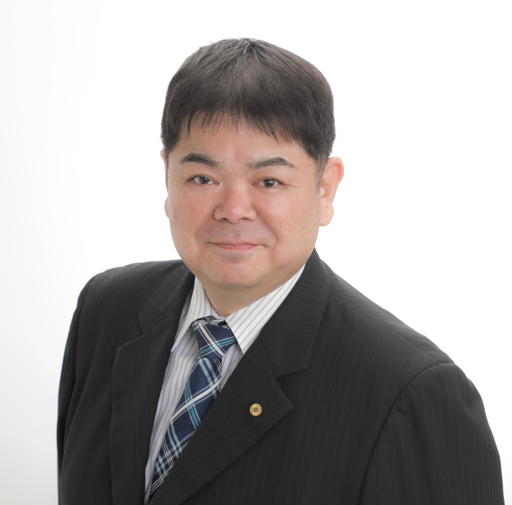

川崎・横浜の相続手続き相談室
相続の手続きから、
遺言・身元保証まで。
ご家族が亡くなったあとの手続きも、
ご自身の将来への備えも。
行政書士・社会保険労務士にご相談ください。
初回60分無料 ／ 土日祝は要予約
こんなお悩みはありませんか？
相続が初めての方も、将来が心配な方も。
次のようなご相談をお受けしています。
うりずんがお手伝いできること
相続手続きと年金を、一つの窓口で。
ご自身の備えについても、
必要なサポートを一緒に整理します。
相続手続き・年金の請求
- 相続手続き
- 戸籍収集・相続人調査、財産調査、遺産分割協議書の作成、預貯金の相続手続き。
- 年金の請求
- 未支給年金・遺族年金など、ご遺族に必要な年金手続き。
遺言・身元保証・終活
- 遺言・生前の備え
- 遺言書の作成サポート、任意後見契約、財産管理委任契約。
- 身元保証・死後事務
- 入院や施設入居に備える身元保証、ご逝去後の手続きを託す死後事務委任契約。
相続登記は司法書士、相続税の申告は税理士、紛争対応は弁護士と連携します。
漫画でわかる、うりずんのお手伝い
1 / 7

代表 前西原 清城
担当者のご紹介
代表の前西原清城は、行政書士と社会保険労務士の資格を持っています。相続の書類や預貯金の手続きだけでなく、ご遺族の年金についてもご相談いただけます。
事務所は川崎区中島にあります。ご家族のこと、ご自身のこれからのこと。何を頼めるか分からない段階でも、お問い合わせください。
代表・メンバー紹介を見る ↗まずはお気軽にご相談ください
何を頼めるのか、費用はどのくらいか。
お話を伺いながら、ご案内します。
その場で契約を決める必要はありません。
初回60分相談無料
ご契約の前に書面でお見積り
土日祝もご予約で対応
フォームからのご相談
24時間受付・翌営業日までに返信お問い合わせ → 初回相談 → お見積り → ご納得いただいてからご契約
お困りのことがあれば、ご相談ください
相続のことも、ご自身の備えのことも。
まずは初回60分の無料相談をご利用ください。